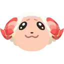
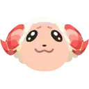
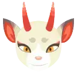
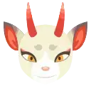

Hi, there! I'm Sejung. I love playing ACNH and my villager's name is Doritos. My island is called Paradise
and is in the Northern Hemisphere.
Doritos is one of my favourite chips and the packet was just on the table when I created my villager so
I picked it as my name.
There are two more villagers, CurlyWurly and Maltesers.
I spent most of my time fishing, catching bugs and swimming when I first started playing. I've donated
all the fish, bugs and deep
sea creatures to Blathers in the Museum. But I haven't collected all the artworks yet because Redd rarely
brings
genuine artworks that I need.
 

 

Filbert, Diana, Lolly, Marty, Sprinkle, Dom, Shari, Hamlet, Whitney and Shino live in Paradise with me.
And my favourite NPC is Pascal. I think he is so funny and cute when he is eating the scallops that he’s
taken from me.
Paradise is a Japanese themed island. I started building Japanese style, but as I was building it, it got mixed up and now I am trying to change it to a European style. If you wish to check it out yourself, feel free to visit Paradise! My dream address is: DA-1234-5678-9012